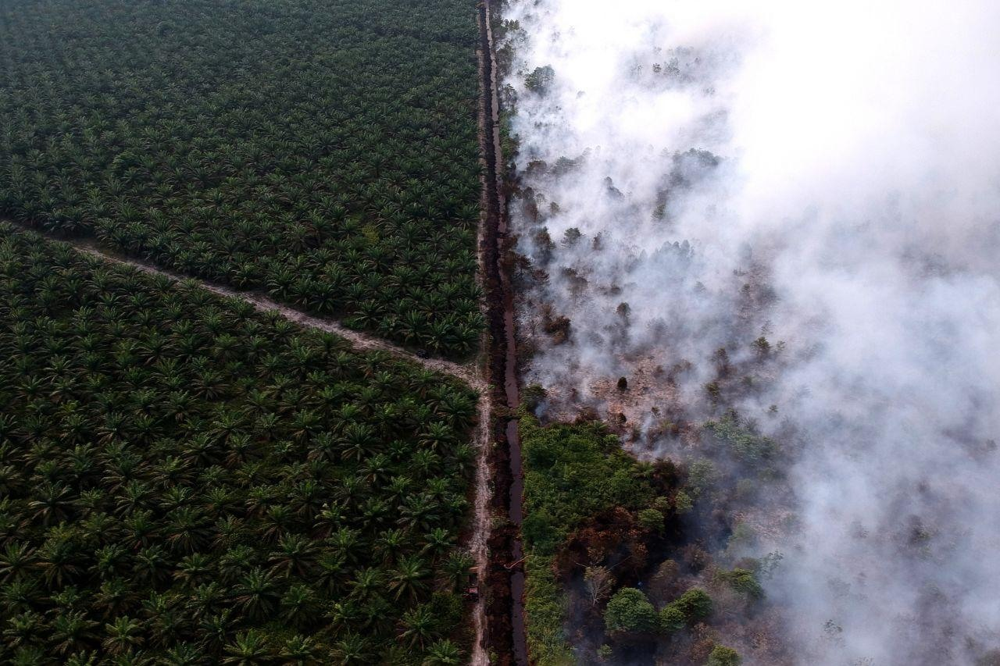
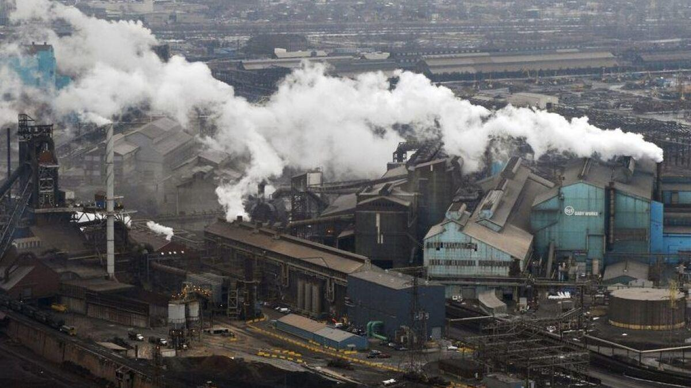
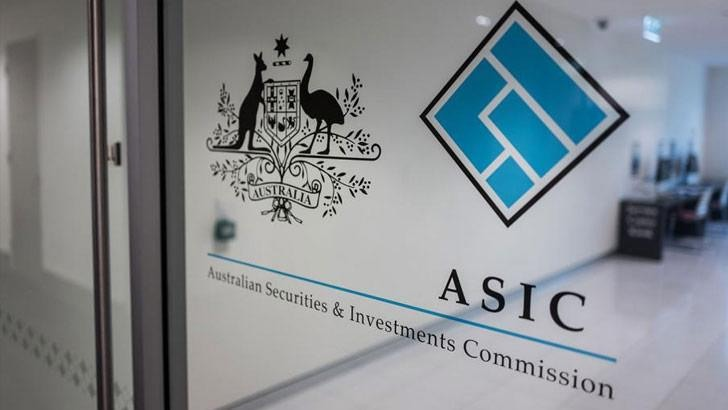

Congratulations! You have completed the Market Failure Challenge.

SCENARIO 01 · COMMON RESOURCES
Common Resources - Protecting the Indonesian Rainforest
Your role: Regional Policymaker.
You are responsible for managing land use in a region of Indonesia.
Currently Indonesia is clearing their forests for agricultural and developmental gain. However the slash-and-burn techniques that are being used, are damaging natural resources and polluting the air for neighbouring countries.
You must decide how much of a shared forest area should be allocated to agricultural development and how much should be protected.
Interactive activity
090
● Forest preserved● Developed land
Forest preserved—
Short-term development income index—
Environmental risk—
Economic consequences
Model of outcomes
Land Development
Forest Preserved
Income Index
Environmental
0%
100%
0/100
Low
20%
80%
20/100
Low
40%
60%
40/100
Moderate
60%
40%
60/100
High
80%
20%
80/100
High
90%
10%
90/100
High
All figures are made up and solely for demonstration purposes. The income index and environmental risk are illustrative, not actual predictions.

SCENARIO 02 · EXTERNALITIES
Externalities - steel production in Gary, Indiana
Your role: Environmental Policymaker
While the steel industry in Gary, Indiana, does generate employment and economic activity, the industrial pollution released imposes environmental and potential health costs on the surrounding community.
You must introduce a policy that addresses pollution while considering steel production and government finances.
Interactive activity
Choose one of the following policies.
Steel output index
Pollution index
Government finances—
Economic consequences
All policies and model outcomes are illustrative, not forecasts for a specific company.
Economic consequences / definitions
Negative Externality - when an economic activity creates unintended and uncompensated impacts for a bystander.
Pollution causes marginal social cost to exceed marginal private cost, potentially resulting in overproduction. Taxation, subsidies and regulation can help correct this market failure.
Subsidies - a government financial support provided to produces or consumers to lower costs, encourage specific economic activity or promote development.
SCENARIO 03 · MERIT GOODS
Merit Goods - Making Education Accessible
Your role: Minister for Education
In September 2023, the Irish government implemented a new scheme, named the Free Schoolbook scheme, which, after being fully implemented at the end of last years, aims to eliminate the costs of schoolbooks, removing a barrier to education.
In this scenario, a school has 500 students, each requiring €200 worth of schoolbooks.
You must decide how much government funding should be provided.
Interactive activity
0200
Remaining cost per student for families—
Total government expenditure—
Percentage of costs covered by government—
Government contribution
Economic consequences
Economic consequences / definitions
Education is a merit good because it creates wide social benefit beyond the individual, and people often underestimate its value and under-consume it.
Government funding will reduce financial barriers, creating greater access to education, yet, this will incur an opportunity cost on the government.
SCENARIO 04 · PUBLIC GOODS
Public Goods - Flood Protection In Ireland
Your role: Member of an Irish city/county council
Due to the ever worsening effects of climate change, an increasing number of Irish homes are being affected by flooding. The Office of Public Works coordinates with local authorities to provide flood relief schemes across Ireland.
A town of 500 households requires a €500,000 flood defence scheme. Each household is asked to contribute €1,000 voluntarily.
Interactive activity
0100
Contributing households—
Voluntary contributions—
Remaining funding shortfall—
Government contribution—
Economic consequences
Flood defences reduce risk rather than eliminate it.
Economic consequences / definitions
Public goods are non-excludable and non-rivalrous meaning it is impossible (or prohibitively costly) to exclude people from its benefits (non-excludable), and multiple people can benefit from the same good simultaneously (non-rivalrous).
Free Rider Problem - when people benefit from goods without paying and choose to rely on others to cover the cost of these goods.
Community flood defences can possess these characteristics within the area they protect. Households may benefit regardless of whether they contributed towards the cost.
This creates the free-rider problem, potentially resulting in underprovision by the free market. Government intervention through taxation and public expenditure can help address this market failure.

SCENARIO 05 · ASYMMETRIC INFORMATION
Asymmetric Information - ASIC review of private credit funds
Your role: Financial market investor
ASIC’s review of private credit funds has revealed the devastating effect asymmetric information is having on financial markets, with private credit funds failing to inform investors of full risks, potential gains, and fees.
You are analysing two fictional private credit funds. Both advertise potential returns but provide limited information about their costs and risks.
Interactive activity
Select a fictional fund to examine.
Can you properly assess either fund based on this information alone?
Financial Information
Fund A
Fund B
Advertised target return
6%
9%
Annual Fees
1%
3%
Underlying lending risk
Moderate
High
Withdrawal restrictions
Limited
Significant
Valuation Method
Independently reviewed
Internally Assessed
Economic consequences
Fictional financial products for classroom analysis only. Target returns are not guaranteed; this is not investment advice.
Economic consequences / definitions
Asymmetric Information - any situation where one party in an economic interaction knows more relevant information than the other about what is being traded or about relevant actions.
Fund managers may possess greater knowledge about financial products than consumers. This information gap can contribute to adverse selection and moral hazards - two examples of market failure.
More intense regulation can lower the asymmetry present.
All simulation figures and hypothetical outcomes are fictional and simplified for educational purposes.